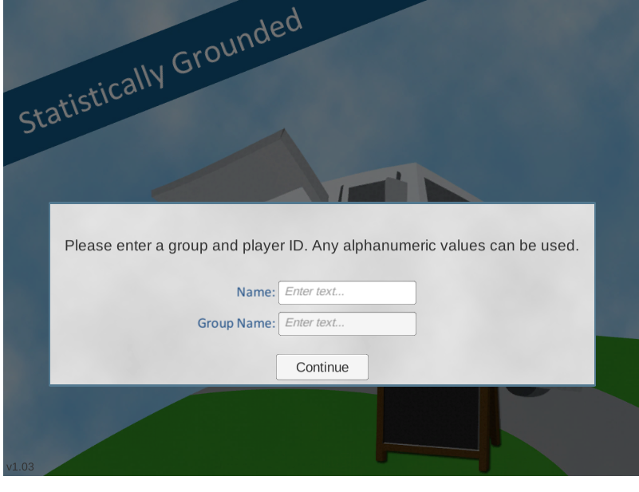
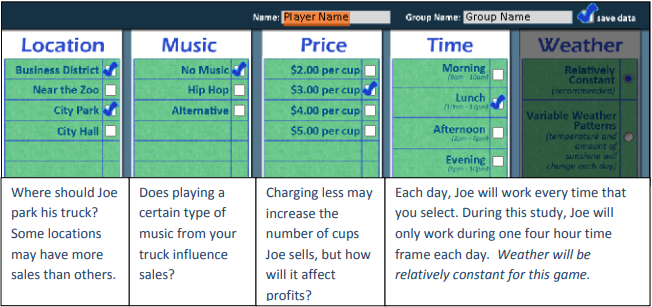
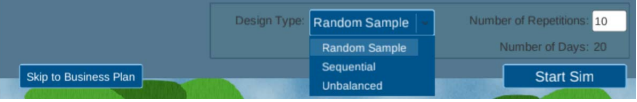

Using statistics to succeed in coffee business
Contributors: Shonda Kuiper
Contributors: Shonda Kuiper
Figure 1: Settings to start Greenhouse Game for Part 1
Figure 2: Settings to generate data for Part 1
Figure 3: Settings to generate data for Part 1
Figure 4: Settings to generate data for Part 1
Figure 5: Settings to generate data for Part 1
1) Enter your Player ID and Group ID into the Coffee Truck App1. Verify that you have exactly 10 samples from each location. Note that sometimes in can take the data a few hours to load, so if you do not see your data in the App, try again later. Using Sales as the response variable, conduct a two-sample t-test to determine if there is a differences in the locations.
2) Enter your Player ID and Group ID into the Coffee Truck App1. Verify that you have exactly 10 samples from each location. Note that sometimes in can take the data a few hours to load, so if you do not see your data in the App, try again later. Using Sales as the response variable, conduct a two-sample t-test to determine if there is a differences in the locations.
3) Compare your study results to others in the class. What percentage of your class found a p-value less than 0.05?
4) Put Player ID on the x-axis, verify that all students in the class properly sampled 10 days at each location. If any Player ID’s do not appear to have properly followed instructions, list them here and remove them for all future questions on this page.
5) Compare the student data in question 3. How often was the Business District mean greater than the City Park mean? Explain why confidence intervals can provide more useful information than p‐values.
This activity was designed so that the distribution of cups sold is normally distributed with a standard deviation of 10. However, the mean for the business district is 83 cups sold while the mean for the park is 74 cups sold (assuming it is during the lunch time frame, with no music, and priced at $3 a cup).
6) Create side-by-side boxplots of sales by location using all data with your Group ID. Do the samples collected in your class appear to fit these assumptions?
7) When conducting a two‐sample t‐test, the p‐value is the probability of obtaining a test statistic at least as extreme as the one that was actually observed, assuming that the null hypothesis is true. Write a short paragraph to Jo giving a practical explanation of p‐values and alpha levels in the context of this study. More specifically, explain why the p‐values tended to be inconsistent even though the business district is truly better than the park.
Dataspace is supported by the Grinnell College Innovation Fund and was developed by Grinnell College faculty and students. Copyright © 2021. All rights reserved
This page was last updated on November 11th 2024.